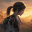
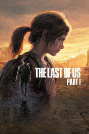

 The Last of Us™ Part I
Detalles
|  | |
| Tiempo de juego | No Jugado |
| Última actividad | Nunca |
| Añadido | 11/5/2024 22:37:13 |
| Modificado | 11/6/2024 22:30:18 |
| Estado de finalización | No Jugado |
| Librería | Playnite |
| Fuente | 4TB TANK |
| Plataforma | PC (Windows) |
| Fecha de lanzamiento | 3/28/2023 |
| Puntuación de la Comunidad | 73 |
| Puntuación de la Crítica | |
| Puntuación de usuario | |
| Género | Acción Aventura |
| Desarrollador | Iron Galaxy Studios Naughty Dog LLC |
| Editor | PlayStation Publishing LLC |
| Característica | Cloud Saves Compat. Total Con Mando Cromos De Logros De Préstamo Familiar Remote Play En TV Un Jugador |
| Enlaces | Punto de encuentro Discusiones Guías Noticias Página de la tienda PCGamingWiki Logros |
| Tag | Acción Acción y aventura Ambientales Aventura Banda sonora Buena trama Cinematográficos Disparos Disparos en tercera persona Drama Emocionales Posapocalípticos Supervivencia Supervivencia / Terror Suspense Tercera persona Terror Un jugador Versiones nuevas Zombis |
Descripción
Disfruta de la emotiva historia y los inolvidables personajes de The Last of Us, ganador de más de 200 premios de Juego del Año.

En una civilización asolada, plagada de infectados y crueles supervivientes, Joel, nuestro exhausto protagonista, es contratado para sacar a escondidas a una chica de 14 años, Ellie, de una zona militar en cuarentena. Pero lo que comienza siendo una simple tarea, pronto se transforma en un brutal viaje por el país.
 Incluye la historia completa para un solo jugador de The Last of Us y el aclamado capítulo previo, Left Behind, que explora los acontecimientos que cambiaron la vida de Ellie y su mejor amiga Riley para siempre.
Incluye la historia completa para un solo jugador de The Last of Us y el aclamado capítulo previo, Left Behind, que explora los acontecimientos que cambiaron la vida de Ellie y su mejor amiga Riley para siempre.
Creado para PC
El lanzamiento de The Last of Us™ Parte I para PC viene cargado de un montón de funciones exclusivas para dar vida a la tensa e inolvidable aventura de Joel y Ellie. Esta versión de The Last of Us Parte I está optimizada para PC e incluye mejoras de calidad de vida específicas. El juego es compatible con AMD FSR 2.2, la Superresolución NVIDIA DLSS* y VSync, y permite limitar la tasa de fotogramas. Además, incluye una serie de funciones diseñadas para PC, como la posibilidad de ajustar la calidad de las texturas, las sombras, los reflejos y la oclusión ambiental, entre otras.

A través de las experiencias de Joel y Ellie, los jugadores de PC podrán sumergirse en los hermosos pero inquietantes escenarios llenos de detalles en auténtica resolución 4K**. Embárcate en un increíble viaje por los Estados Unidos de América, desde las agobiantes y duras calles de la zona de cuarentena de Boston hasta las casas abandonadas y cubiertas de vegetación de la ciudad de Bill, en monitores ultrapanorámicos tanto de formato 21:9 como 32:9.

Explora todas estas ubicaciones adentrándote sigilosamente por viviendas y ciudades abandonadas (y desvalijando los cajones y armarios para conseguir suministros) o sumérgete en la acción trepidante gracias al audio 3D, que te permitirá apreciar a la perfección el susurro de las hojas, el crujido de los cristales y las pisadas de los enemigos que intentan cazarte por sorpresa***.

AMD FidelityFX Super Resolution 2 (FSR 2)
Dales caña a los fotogramas y lucha por sobrevivir como Joel y Ellie con la tecnología de escalado temporal de última generación de AMD. FSR 2 utiliza los algoritmos más avanzados para aumentar los fotogramas y ofrecerte una experiencia de juego de gran calidad y alta resolución en una amplia gama de tarjetas gráficas compatibles.

Compatibilidad con periféricos
The Last of Us Parte I para PC es compatible con DualSense mediante conexión por cable, por lo que los jugadores podrán sentir el impacto de la batalla, el estruendo de los tanques al desplazarse y mucho más gracias a la respuesta háptica y los gatillos adaptativos. La compatibilidad con DualShock 4, así como con muchos otros mandos y con el teclado y el ratón, te permiten adoptar el estilo de juego que más te guste. La versión para PC incluye una serie de nuevas opciones de personalización de los controles, entre las que se incluyen la reasignación completa de los controles, asociación de teclas principal y secundaria para el teclado y el ratón, y un modo adaptativo que permite combinar el uso del teclado y el mando, entre muchas otras. Esta edición para PC también contiene el paquete de funciones de accesibilidad de The Last of Us Parte I, de forma que los jugadores podrán adaptar la experiencia a sus necesidades y preferencias.


* Se necesitan un PC y una tarjeta gráfica compatibles para disfrutar de los gráficos mejorados.
** Se necesitan un PC, una tarjeta gráfica y una pantalla 4K compatibles.
*** Se necesitan auriculares estéreo o altavoces compatibles para disfrutar del audio 3D.